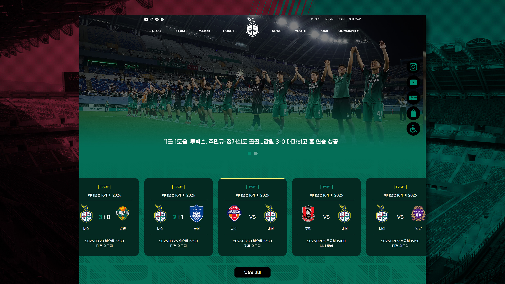
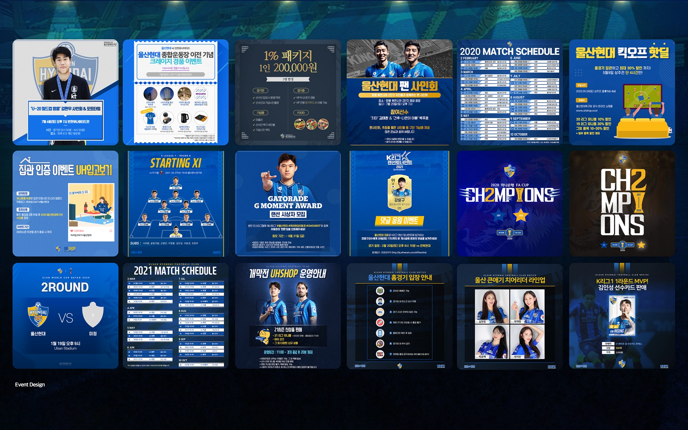

Sportal Korea
K LEAGUE
WEBSITE DESIGN
DAEJEON HANA CITIZEN & ULSAN HD

Overview
K리그 여러 구단의 공식 홈페이지와 운영 콘텐츠를 지속적으로 제작했습니다.
대전하나시티즌을 비롯해 K리그 11개 구단의 홈페이지 디자인과 운영 업무에 참여했습니다. 메인·서브페이지부터 배너, 팝업, 경기 및 이벤트 콘텐츠까지 각 구단의 아이덴티티에 맞춘 다양한 디지털 디자인을 제작했습니다.
Main Work
- Website UI
- Sub Page
- Digital Content
Featured Project 01
DAEJEON HANA CITIZEN WEBSITE
대전 하나 시티즌 공식 홈페이지 디자인
Project Overview
대전하나시티즌의 시즌 리브랜딩에 맞춰 공식 홈페이지 메인 디자인을 제작했습니다. 새롭게 정비된 구단 컬러와 아이덴티티를 웹 환경에 적용하고, 주요 콘텐츠 접근성과 시각적 인상을 함께 고려해 화면을 구성했습니다.
Main Page

새로운 구단 컬러와 아이덴티티를 메인 화면에 반영하고, 주요 경기 정보와 구단 콘텐츠가 빠르게 보이도록 공식 홈페이지의 정보 구조를 정리했습니다.
Current Site Note
현재 운영 중인 화면으로, 전체 UI 및 레이아웃은 제 디자인을 기반으로 하며 이미지와 일부 콘텐츠는 이후 운영 과정에서 변경되었습니다.
Sub Page

경기장 평면도와 좌석 안내 등 정보량이 많은 서브페이지를 사용자가 빠르게 이해할 수 있도록 구성했습니다. 복잡한 정보를 이미지에 의존하지 않고 HTML 기반의 정보 구조와 시각적 위계를 통해 정리했습니다.
Selected Club Work
ULSAN HD
울산HD 공식 홈페이지 서브페이지

울산HD 공식 홈페이지의 주요 서브페이지 디자인에 참여했습니다. 구단의 블루 컬러와 기존 UI 시스템을 유지하면서 콘텐츠 성격에 따라 정보 구조와 시각적 위계를 정리했습니다.
- Design Scope
- Website Sub Page
- Featured Page
- 유소년 소개 페이지
SNS Content
ULSAN HD SNS & EVENT CONTENT
울산현대 운영 콘텐츠 디자인

울산현대의 시즌 운영에 맞춰 경기 안내, 이벤트, 라인업, 스케줄, 프로모션 등 다양한 SNS 콘텐츠를 제작했습니다. 구단의 블루 컬러와 아이덴티티를 유지해 운영 콘텐츠의 정보와 시각적 톤을 통일했습니다.
- Content Type
- Match Day · Event · Lineup · Schedule · Promotion
- Club
- Ulsan HD